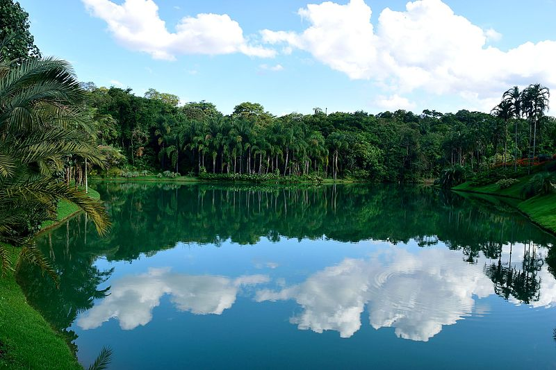
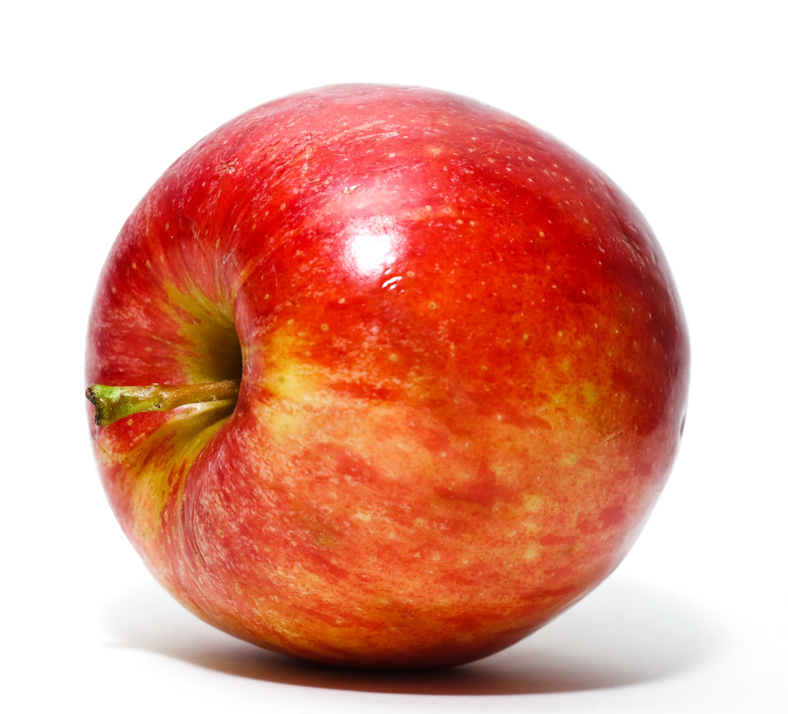
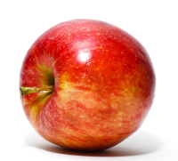

Sempre optar por uso creative commons, porque não tem direito autoral. Sempre se manter atento sobre o direito autoral da imagem.
Bem primeiramente o foco agora será em dois formatos PNG e JPEG.
Formato conhecido pelo seu poder de compactar uma imagem assim gerando arquivos mais pequenos e que ocupam menos espaço. Exemplo:
Usado principalmente por causa de sua transparência. Exemplo:

O exemplo acima mostra que as vezes temos que diminuir a imagem.
Por exemplo ela agora está no tamanho 2418 x 2192 com um peso de 4,53 MB (o que é exagerado).
Ja a abaixo eu diminui para 1000 x 907 e ficou com um peso de 1 MB
Ja está eu diminui para 200 x 181 e ficou 55,7KB
